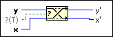

Swap Values Function
Owning Palette: Memory Control VIs and Functions
Requires: Base Development System
Places the value of the y input into the x' output and the value of the x input into the y' output without allocating memory to perform the operation.

 Add to the block diagram Add to the block diagram |
 Find on the palette Find on the palette |